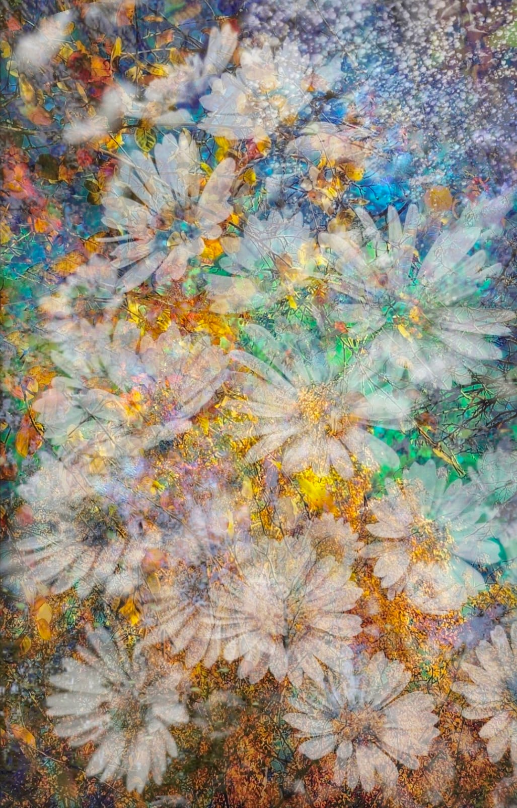
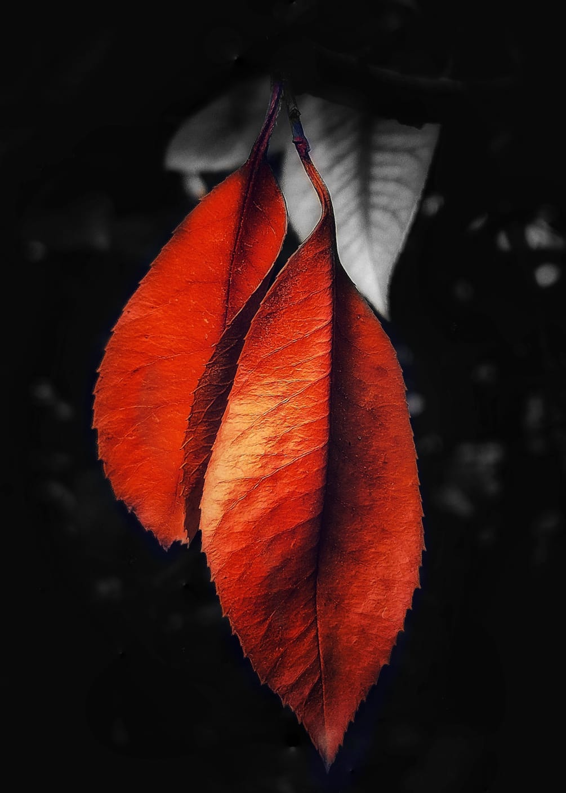

Les Collections

Silences de Seine
N&B • Paris

Éclosion Sauvage
Couleur • Macro

Rosée du Matin
N&B • Nature

Reflets Haussmanniens
N&B • Paris

Pétales Suspendus
N&B • Nature

L'Infiniment Petit
Couleur • Multiples Expositions

Ombres du Trocadéro
N&B • Paris

Symphonie Flore
Couleur • Nature

Ailes d'Émeraude
Couleur • Multiples Expositions

Brumes Urbaines
N&B • Paris

Lumière Botanique
Couleur • Nature

Micro Cosmos
N&B • Macro

Pavés Mouillés
Couleur • Paris

Cœur de Nymphéa
Couleur • Multiples Expositions

Instants Fugitifs
Couleur • Multiples Expositions